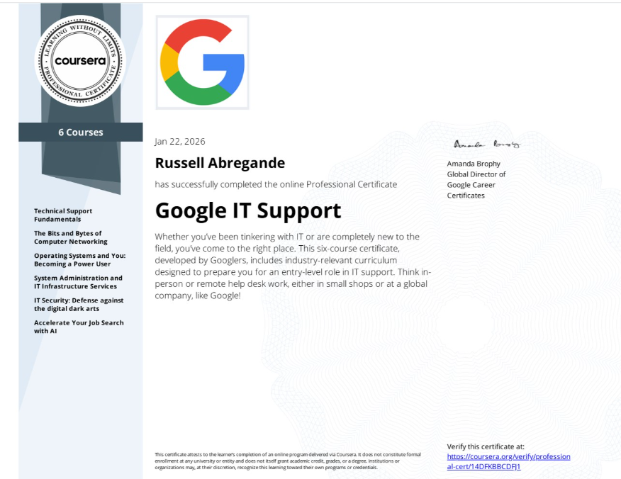

Building production-ready n8n, Make & Zapier workflows for real estate, e-commerce, agencies, and healthcare — so your team focuses on what matters.
I'm Russell — an AI Automation & Systems Specialist who genuinely loves figuring things out. I'm naturally curious about how technology works under the hood, and that curiosity is what drives me to build systems that actually solve real problems.
At Bloomsocial Inc, I built a proprietary digital signage CMS (Bloom Player) from scratch — replacing an unreliable third-party system — and developed an interactive AI chatbot deployed on physical Hollow Box kiosks for live product demos. These weren't hypothetical projects; they're running in production right now.
Whether it's wiring up a complex n8n workflow with AI-powered decision logic, designing a Make blueprint that processes hundreds of orders daily, or mapping out a cross-platform automation strategy — you can count on me to figure out a way to achieve the results you want, with AI as the backbone.

From AI-powered lead scoring to intelligent customer support — n8n lets me wire together any app with custom logic, conditions, and AI models in one visual workflow.
Make's visual blueprint editor lets me design sophisticated multi-path automations — routing leads, processing orders, syncing data across platforms without a single line of code.
Not every tool is right for every job. I match the automation platform to the use case — n8n for AI-heavy flows, Make for complex multi-path logic, Zapier for quick reliable triggers — and bridge them when needed.
15 production-ready automations across n8n, Make & Zapier. Click any card to see the full breakdown on GitHub.
Agents waste hours chasing cold leads. This scores inbound leads 1–10 using GPT-4o-mini — hot leads (7+) trigger instant Slack alerts so you call within minutes.
Support emails pile up and customers wait hours. This AI triage reads, categorizes, drafts replies, and auto-sends — escalating only what needs a human.
Manual onboarding takes 90 minutes and is never the same twice. Signed contract triggers Notion workspace, Slack channel, welcome email, Asana project — in 30 seconds.
No-shows cost clinics thousands. This handles booking, confirmation, and sends 24h + 1h reminders automatically — zero staff intervention needed.
Writing 3 post variants per brief takes hours. This pipeline takes a brief and produces 3 AI-generated variants, logs to Sheets, and schedules to Buffer — all automated.
Every Shopify order triggers 3 parallel actions instantly: log to Sheets, send customer confirmation, alert fulfillment team on Slack. Zero manual processing.
Not all leads deserve a senior agent's time. This routes high-budget leads to HubSpot + Calendar + Slack, while others enter an automated nurture sequence.
Publishing to 3 platforms manually wastes an hour per post. This watches a Google Sheets content calendar and pushes to Instagram, Facebook, and LinkedIn simultaneously.
Manual insurance checks take 20 minutes and delay patient intake. This verifies coverage via API on form submit in under 10 seconds, logs results, and routes accordingly.
Stockouts happen when no one's watching. Runs daily at 6 AM, flags low-stock variants, emails structured PO requests to suppliers, and alerts the team on Slack.
Facebook leads go cold in minutes. Captures every submission, creates a HubSpot contact, sends a personalized email, and Slack-alerts your team — all in under 30 seconds.
70% of carts are abandoned. This 3-step sequence sends a 1h reminder, 24h discount offer, and 48h SMS nudge — running 24/7 without a single manual touchpoint.
Great work goes unreviewed because no one remembers to ask. Auto-sends a review request 3 days after project delivery — logs 5-star responses to a testimonials sheet.
People forget meetings. Sends a 24h email and 1h SMS reminder for every Calendly booking — logged automatically to a Google Sheet for tracking.
Monthly reporting steals 2–4 hours per client. Runs on the 1st of every month, pulls 30 days of GA data, formats it, and emails the report — before you've had coffee.
Real systems built and deployed at Bloomsocial Inc.
Custom digital signage CMS powering real-time content delivery across screen networks. Built the full pipeline from content scheduling to display management — replacing manual updates with automated, centrally-managed broadcasts.
AI-powered conversational kiosk deployed on a Hollow Box display for in-store product demos. Customers interact with the AI to explore products, get recommendations, and receive real-time answers — no staff needed.
Book a free 30-minute consultation. We'll map out your automation strategy together — no commitment, just clarity.
Book on Calendly